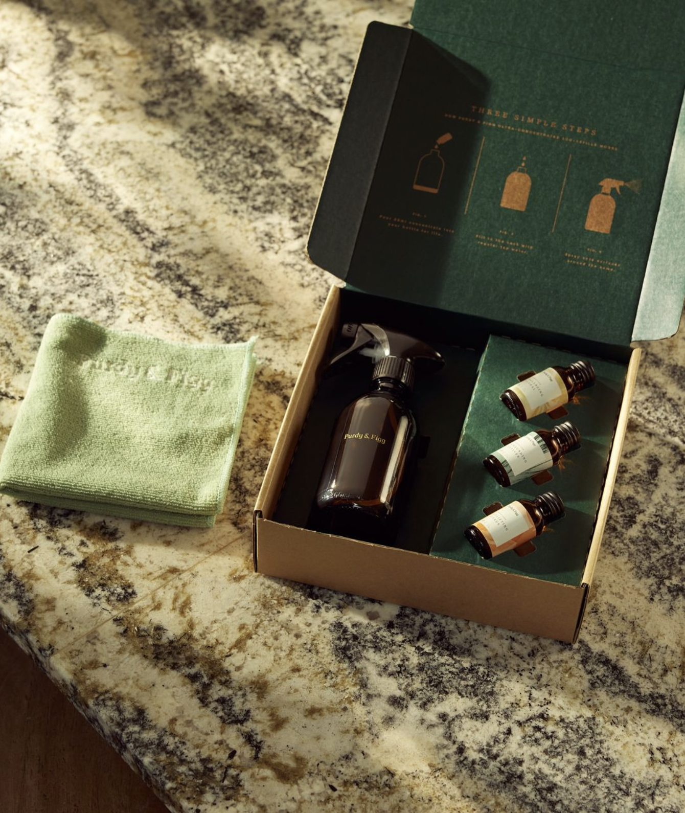

A speculative design exploration into the next generation of wellness technology — where biometric data becomes a language for self-understanding rather than a stream of numbers to anxiously monitor.
Type
Concept / Speculative Design
Scope
Product Strategy, UX Architecture, UI Design, Motion Design
Platform
iOS Mobile · Wearable Integration
01 — The Problem Space
The dominant paradigm in wellness technology — collect everything, display everything, alert constantly — has produced an industry category that paradoxically increases health anxiety rather than reducing it. Users check their HRV in the morning and begin the day already categorising themselves as "recovery: poor". The data is accurate. The experience is harmful.
This concept explored an alternative paradigm: what if a wellness app's primary design goal was to reduce time spent in the app, not increase it? What if the measure of success was how little you needed to look at your data to feel confident about your body?
02 — Strategic Direction
The design direction rejected the dashboard metaphor entirely. Instead of a home screen filled with metrics, Aether's primary interface is a single "readiness" representation — a breathing, responsive visual form that communicates overall state without requiring the user to interpret numbers. Data lives one level deeper, accessible when wanted but never foregrounded.
Principle 01
Peripheral awareness over central attention. The app communicates through the edges of consciousness, not demands for focus.
Principle 02
Numbers become sentences. Every metric is translated into plain-language insight before it is displayed — the number is available, never primary.
Principle 03
Curiosity rewarded, anxiety not. Deeper data is revealed through deliberate navigation — never surfaced unprompted.
03 — Design System
The visual system was built around organic forms and continuous motion. No hard edges, no sharp transitions, no alert-red colours. The primary readiness indicator is a soft, pulsing form — its shape, colour temperature, and animation speed calibrated to the user's physiological state. Resting well: a slow, warm, round form. Stressed and under-recovered: cooler, more angular, faster.
State Display — Playfair Display
Insight Body — Inter 300 · 14px · 1.8
METRIC LABEL — INTER 400 · 9PX

04 — Key Explorations
Readiness Form
A generative visual form — not a chart or score — that represents daily wellness state through colour, movement, and shape. No number on the home screen.
Plain Language Insights
Every metric translated by AI into one-sentence insight. "Your HRV suggests your nervous system is recovering well. A moderate training session is appropriate today."
Ambient Watch Complication
A glanceable state colour on the watch face — no numbers, no alerts — that gives peripheral awareness without requiring the phone to be checked.
Weekly Narrative
A Monday morning single-screen narrative — not charts — summarising the previous week's patterns in 3 sentences. The data is there if you want it; the story is there if you don't.
05 — Reflection
The most useful wellness technology might be the least visible. Designing for reduced engagement — for an app that earns trust precisely because it demands so little — challenges almost every metric used to evaluate digital product success. This tension is productive and worth pursuing.
The question of how to balance depth-for-the-curious with simplicity-for-the-anxious has no clean answer. A future iteration would explore user-controlled depth settings — letting individuals declare their relationship with their data rather than assuming a universal preference.
Next exploration
Forma — Design System Exploration →Concept work like this informs how commercial projects are approached. If you're building in the wellness or health tech space, let's talk.
Get in touch →